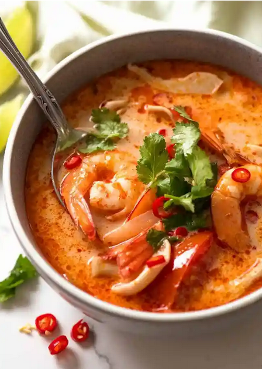

Tom Yum Soup

A delicious soup for a chilly day!
This is an absolutely delicous soup. It is excellent for days you feel stuffy, chilly, or simply adventerous. It requires a few ingredients that you may not find in your usual shopping venues, but this soup is well-worth a trip out of your way.
Ingredients
- 300g / 10oz whole prawns / shrimp with heads and shells on
Broth Ingredients
- 3 cup (750 ml) water
- 1/2 cup (125 ml) chicken stock/broth , low sodium
- 2 stalks of lemongrass , outer layers peeled
- 1.5 cm / 3/5" piece of galangal , cut into 4 slices
- kaffir lime leaves , torn roughly
- 2 Thai or birdseye chilies
- 3 garlic cloves
Soup Add-Ins
- 120g / 4oz oyster mushrooms
- 1 roma tomato , cut into wedges
- 1/2 white onion (medium sized), cut into wedges about 1 cm thick
- 1 tsp sugar
- 3 tbsp fish sauce (Note 5)
- 3 tbsp lime juice
- Coriander/cilantro, for garnish
Steps
Make Broth
- Peel the prawns. Place heads and shell in pot, reserve meat.
- Use a meat mallet or similar to bash the garlic, chilli and lemongrass so they burst open to release flavour. Add into pot.
- Crush kaffir lime leaves with your hands. Add into pot.
- Add galangal, stock and water. Bring to simmer on high heat, cover, then reduce to medium and simmer for 10 minutes.
- Strain the broth, discard the prawn shells etc, then return broth into same pot over low heat.
Finish Soup
- Add onions and mushrooms, simmer 3 minutes. Add tomatoes, simmer for 1 minute.
- Add prawns, simmer 2 minutes or until just cooked.
- Stir in sugar and fish sauce, simmer for 1 minute.
- Add lime juice, then taste. Adjust sweet (sugar), salt (fish sauce) and sour (lime) to your taste (trust me, you'll know when you like it!).
- Ladle into bowls and serve with fresh coriander and fresh chilli! This is the CLEAR version of Tom Yum.
Recipe and Image from RecipeTinEats